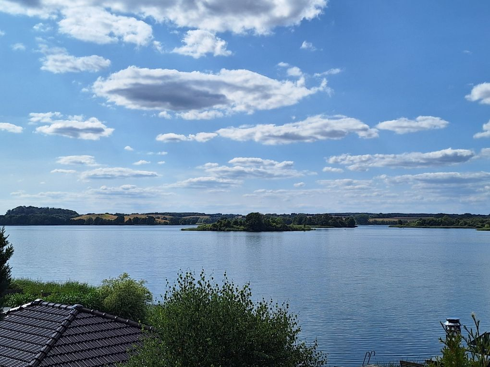
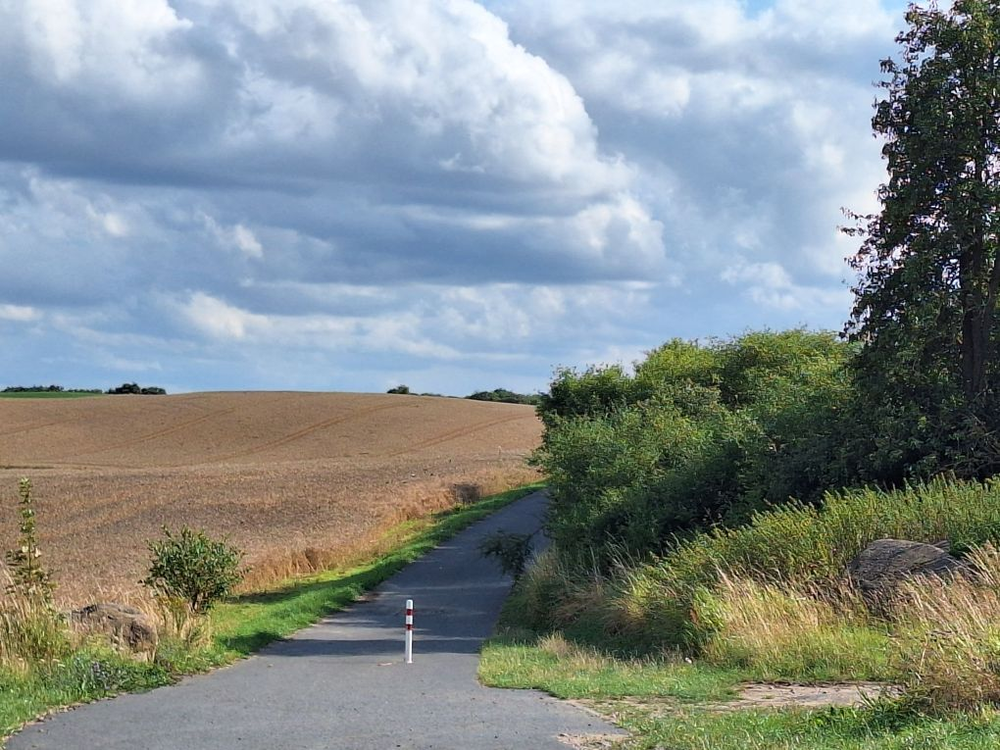
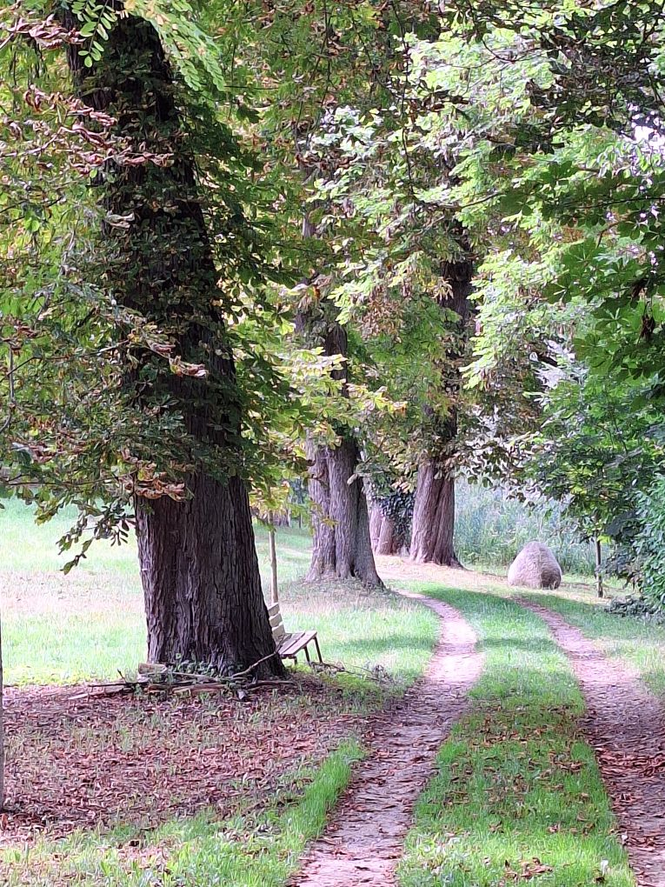

Alles, was sich ein Ausflug lohnt – von Fürstenwerder aus bis 50 Kilometer weit
Alles fußläufig erreichbar – die historische Stadt mit Stadtmauer und alten Toren liegt direkt vor der Haustür.
Fürstenwerder ist das nördliche Tor zum Naturpark Uckermärkische Seen – Wasser, Wald und weite Landschaft direkt vor der Tür.

Rund 900 km² unberührte Landschaft mit mehr als 100 Kilometern Wasserwanderwegen – der Naturpark beginnt direkt in Fürstenwerder. ab der Haustür

Der Uckermärkische Radrundweg führt direkt durch den Ort. Radfernwege und die Seenrunde am Unteruckersee laden zu ausgedehnten Touren ein.

Kanutouren durch die Seenlandschaft rund um Fürstenwerder und Wanderungen wie der 66-Seen-Wanderweg machen die Region erlebbar.
Lohnende Ziele für Tagesausflüge – mit ungefährer Entfernung ab dem Ferienhaus.
Regionaler Überblick – perfekt für die weitere Planung.